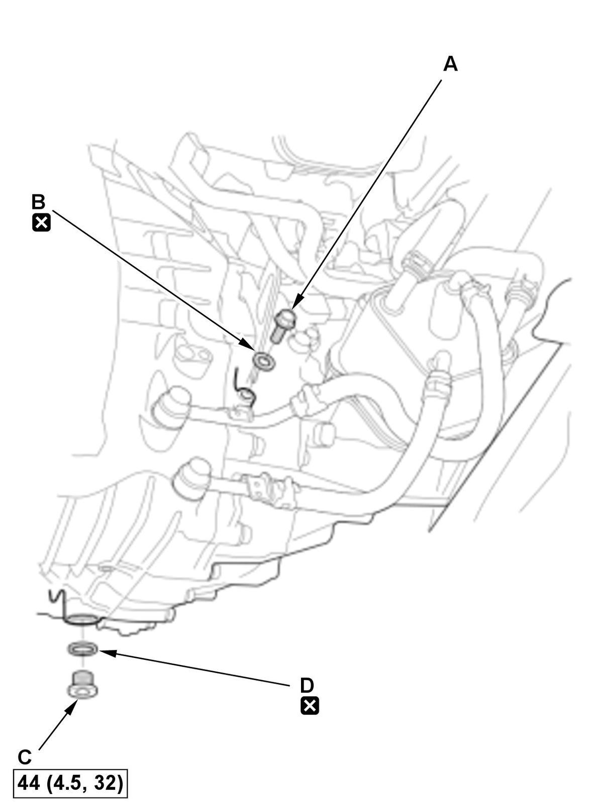
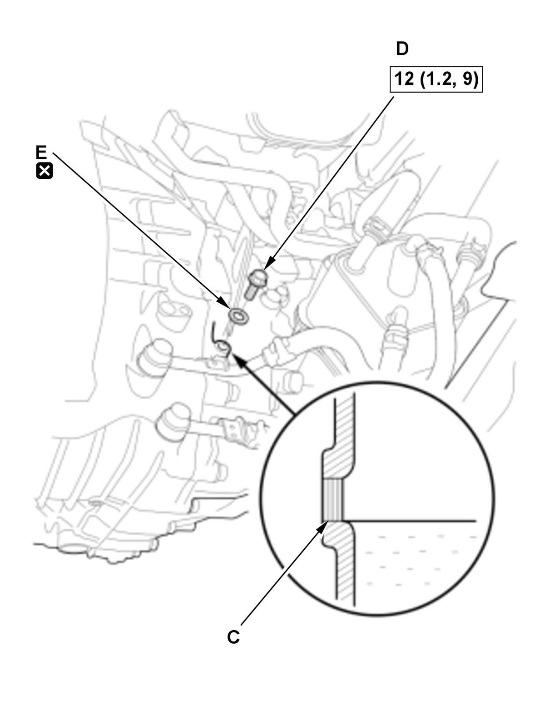
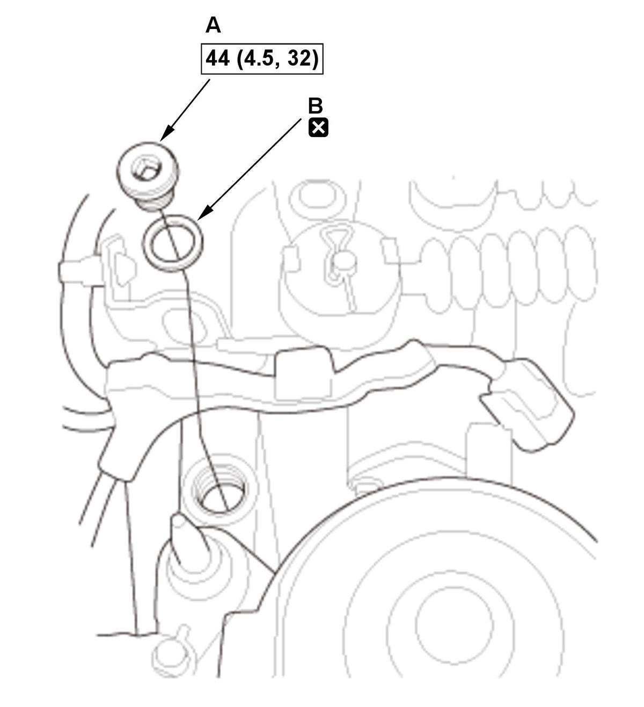

MTF Inspection and Replacement (K20C1 (M/T)) (2017 2018 2019 2020 2021): Replacement
WARNING: This page is about a different variant/trim than selected.
NOTE: How to read the torque specifications .
- Vehicle - Lift
- Engine Undercover Plate - Remove
- MTF - Drain

Courtesy of HONDA, U.S.A., INC.1. Remove the oil check bolt (A) with the sealing washer (B). 2. Remove the drain plug (C) with the sealing washer (D), and drain the MTF.
3. Install the drain plug with a new sealing washer.
- Air Cleaner - Remove
- MTF - Refill

Courtesy of HONDA, U.S.A., INC.1. Remove the filler plug (A) with the sealing washer (B). 2. Refill the MTF from the filler plug hole on the transmission, until the MTF overflows from the oil check bolt hole (C). Always use Honda Manual Transmission Fluid (MTF).
3. After the fluid stops overflowing, install the oil check bolt (D) with a new sealing washer (E).
Fluid Capacity: 2.2 L (2.3 US qt) at change 2.6 L (2.7 US qt) at overhaul - Filler Plug - Install

Courtesy of HONDA, U.S.A., INC.1. Install the filler plug (A) with a new sealing washer (B). - All Removed Parts - Install
1. Install the parts in the reverse order of removal. - Maintenance Minder - Reset (With Maintenance Minder System)
1. If the Maintenance Minder required to replace the MTF, reset the Maintenance Minder with the gauge (see "Resetting the Maintenance Minder"). If the Maintenance Minder did not require to replace the MTF, reset the Maintenance Minder with the HDS (see "Resetting the Individual Maintenance Items").